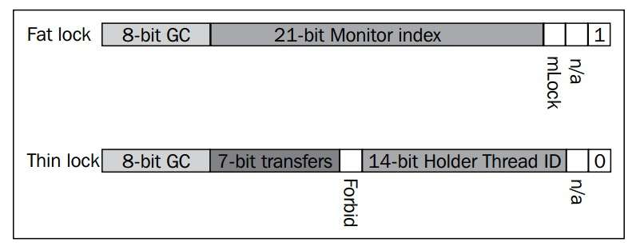
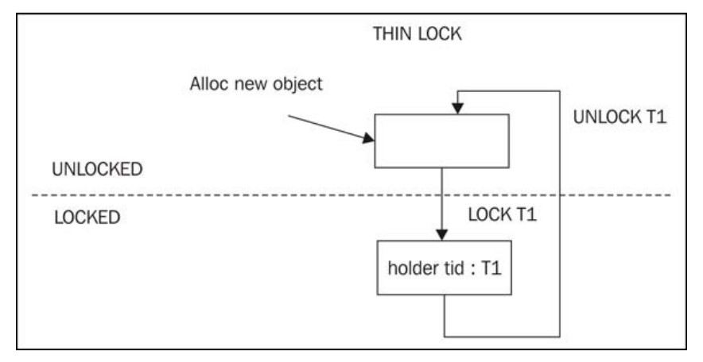
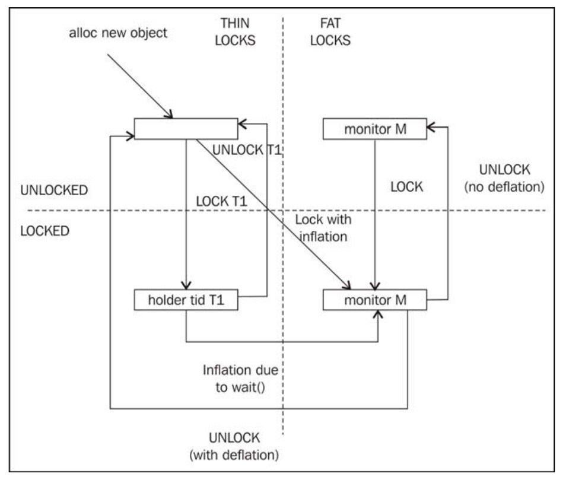
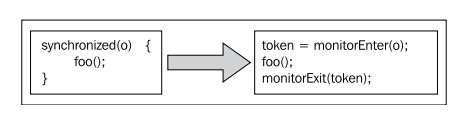

4.3 Java中线程与同步机制的实现
本节将对Java运行时中线程和同步机制的实现以及相关背景知识进行介绍，以便读者可以更好的处理并行结构，理解如何使用同步机制而不会造成较大的性能损耗。
4.3.1 Java内存模型
现在CPU架构中，普遍使用了数据缓存机制，可以大幅提升CPU对数据的读写速度，降低处理器总线的竞争程度。正如所有的缓存系统一样，这里也存在一致性问题，对于多处理器系统来说尤其重要，因为多个处理器有可能同时访问内存中同一位置的数据。
内存模型定义了不同的CPU在同时访问内存中同一位置是，何种情况下会看到相同的值，何种情况下会看到不同的值。强内存模型（例如x86平台上，就相当强）是指，当某个CPU修改了某个内存位置的值后，其他的CPU几乎自动就可以看到这个刚刚保存的值，在这种内存模型之下，内存写操作的执行顺序与代码中的排列顺序相同。弱内存模型（例如IA-64平台）是指，当某个CPU修改了某个内存位置的值后，其他的CPU不一定可以看到这个刚刚保存的值（除非CPU在执行写操作时附有特殊的内存屏障类指令），从更一般的角度说，所有由Java程序引起的内存访问都应该堆其他所有CPU可见，但事实上却不能保证一定立即可见。
不同硬件平台上对于"读-写" "写-读" "写-写"操作的处理有细微区别。Java为了屏蔽硬件区别，因此定义了JVM对这些操作的具体处理方式。对于像C++这样会编译为平台相关代码，而且缺少内存模型的的静态编程语言来说，在对操作读写时就会比较痛苦，需要仔细考虑不同平台之间的区别。尽管C++中也有volatile关键字，但应用程序的具体行为还无法独立于其所在的系统平台。此外，在C++中，部分"事实上的"内存模型并不属于编程语言自身，而是由线程库和操作系统调用决定的。在像Intel IA-64这种具有弱内粗模型的CPU架构上，程序员有时甚至会在代码中显式使用内存屏障。 总之，C++源代码在某个系统平台上完成编译，应用程序的行为也就不会再发生改变了。
Java是如何保证在所有支持的平台上具有相同的行为呢？在Java编程语言中并不存在内存屏障这东西，而且考虑到Java所追求的平台无关性，或许就不应该有内存屏障。
4.3.1.1 早期内存模型中的问题
之所以Java中需要有一个统一的内存模型，是为了保证在不同的硬件平台上能够有一致的行为。从Java的1.0版本到1.4版本，在实现内存模型的时候都是按照原始的Java语言规范做的。但是，第一版的Java内存模型中存在着严重的问题，实际使用时，会导致无法达到预期效果，而且有时还会使编译器的优化失效。
原始内存模型允许编译器对操作volatile变量和非volatile变量重新排序。以下面的代码为例：
volatile int x;
int y;
volatile boolean finished;
/* Code executed by Thread 1 */
x = 17;
y = 4711;
finished = true;
/* Thread 1 goes to sleep here */
/* Code executed by Thread 2 */
if (finished) {
System.err.println(x):
System.err.println(y);
}按照旧版的内存模型，上面的代码会打印出17，但未必会打印4711，这与volatitle关键字的语义有关。虽然volatitle关键字有明确的定义，但对非volatitle变量的读写操作却没有明确的定义。对那些常年与底层硬件打交道的程序员来说，这没什么，但大多数Java程序员可能认为，对变量finished的赋值操作应该会将其之前的赋值操作都刷入到内存中，其中包括非volatitle变量y。新的内存模型强制使用了更加严格的屏障来限制对volatitle变量和非volatitle变量的优化行为。
之前提到的无限循环的那个例子中，JIT编译器可能会为非volatitle变量在每个线程中创建一份局部拷贝。
考虑下面的代码：
int operation(Item a, Item b) {
return (a.value + b.value) * a.value;
}编译器可能会将上面的代码优化为下面的样子：
int operation(Item a, Item b) {
int tmp = a.value;
return (tmp + b.value) * tmp;
}注意，上面的代码中，访问对a.value被合并为一次操作，在不同的CPU平台上，这种优化方式所所带来的性能提升不尽相同。但是，对JIT编译器来说，尽可能减少从内存载入数据的操作肯定是有好处的，因为访问内存会比访问寄存器慢上几个数量级。
原始的Java内存模型存在缺陷，因此若果编译器不能证明变量a和变量b是同一个对象的话，就不一定会执行上述优化。幸运的是，新版的Java内存模型中指定了只要定义属性域value时没有附加volatitle关键字，就可以执行上述优化。新版的内存模型允许线程为非volatile变量保存线程内拷贝，这也说明了4.2.5节中的示例代码为什么可能会产生无限循环。
4.3.1.1.1 不变性
旧版Java内存模型的一大问题是，在某些情况下，被声明为final的变量是"可变的"。按照定义来说，被声明为final的变量因其不变性本来是不需要使用同步操作的，但在旧版内存模型中，却不是这样。在Java中，对被声明为final的成员变量的赋值只能在构造函数中进行，并且只能赋值一次，但在构造函数运行之前，未初始化的成员变量会有一个默认值，可以是0或者null。在旧版内存模型中，如果不显式使用同步操作的话，其他的线程可能在执行赋值操作将值提交到内存之前会看到这个默认值。
上述问题的典型事例就是String对象的使用。String类中所有成员变量都是加了final声明的，因此保证了String的实例是不可变对象，此外，为节省内存占用，多个String对象可能会使用一个共享字符数组来保存具体字符，并使用起始偏移位置和长度来定位具体的字符串。例如，字符串 cat和字符串 housecat就有可能共享同一个字符数组，按照旧版内存模型，在字符串 cat对象的构造函数执行之前，其起始偏移位置offset字段和长度length字段（默认值均为0）可能会被其他线程看到，使其认为该字符串对象的内容是"housecat"，当构造函数执行结束后，该字符串对象的内容又会被解读为"cat"，从实际效果行看，违反了"字符串是不可变的"这一原则。
译者注：后来`java.lang.String`类的实现发生了变化（对应的发行版好像是jdk1.7.0_u6，但在ReleaseNote中没找到说明），抛弃了以往的"copy-on-write"模式，而是每个字符串对象都有自己的字符数组
String旧版实现
String新版实现另附String类的简单实现: C++面试中string类的一种正确写法 by 陈硕
新版本的内存模型修复了这个问题，声明为final的成员变量无需使用同步操作就可以保证器不变性。但需要注意的是，即便是使用final关键字来声明成员变量，但如果在构造函数完成之前就将该成员变量暴露给其他线程的话，仍然可能会出现上述问题。
译者注：这里之所以仍可能会出问题，是因为按照Java语言规范（后续简称为JLS），**happens-before**规则只保证了在默认构造函数先于其他操作之前发生，但不保证会在其他操作之前结束，因此如果在构造函数结束之前就将当前对象暴露给其他线程，还是会出问题的。
4.3.1.2 JSR-133
重新设计Java内存模型是由JCP（Java Comunity Process组织完成的），具体内存在JSR 133（Java Specification Request 133）中，在2004年发布的Java 1.5中已成为Sun公司的参考实现。JSR以及JLS本身的内容都挺复杂，充满了精确的、形式化的描述内容。对JSR-133的详细介绍超出了本书的范畴，如果读者想要进一步提升自己的编程水平，详细阅读一下相关内容是很有帮助的。(译者注，相关内容参见The Java Memory Model)
网上有很多对JSR-133进行介绍的内容，例如由Jeremy Manson和Brian Goetz编写的JSR-133 FAQ，以及由Brian Goetz编写的Java并发编程实践
JSR-133解决了volatitle重排序的问题，明确了final关键字的语义，保证了其不变性，此外，还可以修复以往JDK版本中一些客剑心问题。volatitle的语义更严格，相应的，执行效率略有下降。
对于Java来说，JSR-133和新版的内存模型是一大进步，使 同步的语义更简单，更直观，直接使用volatitle关键字就可以实现简单的同步访问。当然，即便是有了新版的内存模型，在多线程环境下，操作内存仍然可能会出现各种问题，但以往那种因语义不明而导致的问题已经一去不复返了，因此，深入理解同步机制，明确锁和volatitle关键的用途才能生产出优质程代码。
4.3.2 同步的实现
下面的内容将介绍Java字节码和JVM中是如何实现同步的。
4.3.2.1 原生机制
从计算机的最底层结构来说（例如CPU架构），同步是使用原子指令实现的，各个平台的具体实现可能有所不同，以x86平台为例，使用了专门的 锁前缀（lock prefix）（译者注，参见Intel® 64 and IA-32 Architectures Software Developer’s Manual Volume 2 Vol. 2A 3-465中对锁前缀的说明）来实现多处理器环境中指令的原子性。
在大多数CPU架构中，标准指令（例如加法和减法指令）都可以实现为原子指令。
为了实现原子的条件载入和条件存储指令，比较常用的 **比较-交换（compare and exchange）指令**（译者注，参见参见Intel® 64 and IA-32 Architectures Software Developer’s Manual Volume 2 Vol. 2A 3-148中对cmpxchg指令的说明）。比较-交换指令会对内存中指定位置和的值和一个期望值作比较，如果相同，则将另一个输入参数的值写入到内存的指定位置，并设置ZF寄存器（译者注：标记寄存器的内容参见这里）；如果不同，则清空ZF寄存器，返回期望的数值。由此该指令可以产生不同的执行结果，后文将会提到，比较-交换指令是实现锁的基础。
此外，**内存屏障（memory fence）**指令也可用来保证所有的CPU都可以看到对内存中数据的最新修改，因此可将之用来实现volatitle关键字的语义，编译器会在每个对volatitle变量赋值的语句后面，插入一条内存屏障指令，以便其他的CPU可以看到本次修改。
由于内存屏障强制执行内存有序，使CPU缓存失效，无法并行执行指令，因此使用原子指令是有性能损耗的，即使原子指令是实现同步的基础，在使用的时候也需要多加小心。
对调用原子指令的常用优化是将之作为JVM的 **内建函数（intrinsic call）**使用，例如，当运行时发现调用了java.util.concurrent.atomic包中某些函数，可以将之简单的实现为内联的汇编指令。以下面的代码为例：
import java.util.concurrent.atomic.*;
public class AtomicAdder {
AtomicInteger counter = new AtomicInteger(17);
public int add() {
return counter.incrementAndGet();
}
}
public class AtomicAdder {
int counter = 17;
public int add() {
synchronized(this) {
return ++counter;
}
}
}在第一个AtomicAdder类中，如果运行时能够识别出add方法具体功能，就无需关心AtomicInteger.incrementAndGet方法的具体实现，在生成代码时直接插入原子的加法指令即可。之所以可以用这种方法操作，是因为java.util.concurrent.AtomicInteger类是JDK的一部分，具有良好的语义定义。如果没有原子指令的话，虽然可也已实现相同的功能，但会更麻烦一些。
实践中，使用同步操作可以实现排他性访问，但失去并行性会带来不小的性能损耗，这是因为除了一次只有一个线程可以访问关键区之外，同步操作本身也会带来性能损耗。
在微架构（micro-architecture）层面，原子指令的执行在各个平台上不尽相同。一般情况下，它会暂停向CPU流水线添加新指令，直到所有已有的指令都完成执行，并将操作结果刷入到内存中。此外，该CPU还会阻止其他CPU对相关缓存行（cache line）的访问，直到该原子指令结束执行。在现代x86硬件平台上，如果屏障指令（fence instruction）中断了比较复杂的指令执行，则该原子指令可能需要等上很多个时钟周期才能开发执行。因此，不仅是过多的关键区会影响系统性能，锁的具体实现也会影响性能，而当频繁对较小的关键区执行加锁、解锁操作时，性能损耗更是巨大。
4.3.2.2 锁(Lock)
尽管操作系统提供的同步机制，实现锁的时候只需要将未得到锁的线程放入等待队列即可，但这种粗放的、一锅端的方式并不适用于所有场合。
如果某个锁从未有竞争出现，而且加锁的次数也非常有限，又或者锁的竞争非常激烈，这两种情况下，需要针对各自的应用场景选择合适的锁实现，这是自适应运行时的又一个用武之地。在介绍自适应运行时如何根据反馈信息选择锁实现之前，这里需要先介绍两种基本锁实现，即 胖锁（fat lock）和瘦锁（thin lock）。
瘦锁通常用于没什么竞争，且锁的持有时间很短的场景中，胖锁则用于更复杂一些的场景中。运行时可以根据锁的竞争情况，在两种类型之间做切换。
4.3.2.2.1 瘦锁（Thin Lock）
**自旋锁（spinlock）**是瘦锁的最简实现。当线程无法获取到锁监视器对象时，该线程将进入循环，重复执行下一次获取监视器对象的操作。一般情况下，自旋锁使用原子的 比较-交换指令来实现排他性写操作，如果无法获取到锁，则重复执行 比较-交换指令。
下面的代码是一个非常简单的自旋锁实现。
public class PseudoSpinlock {
private static final int LOCK_FREE = 0;
private static final int LOCK_TAKEN = 1;
//memory position for lock, either free or taken
static int lock;
/**
* try to atomically replace lock contents with
* LOCK_TAKEN.
*
* cmpxchg returns the old value of [lock].
* If lock already was taken, this is a no-op.
*
* As long as we fail to set the taken bit,
* we spin
*/
public void lock() {
//burn cycles, or do a yield
while (cmpxchg(LOCK_TAKEN, [lock]) == LOCK_TAKEN);
}
/**
* atomically replace lock contents with "free".
*/
public void unlock() {
int old = cmpxchg(LOCK_FREE, [lock]);
//guard against recursive locks, i.e. the same lock
//being taken twice
assert(old == LOCK_TAKEN);
}
}自旋锁实现简单，进入成本低，但维持自旋状态却代价高昂，因此自旋锁只适用于锁的持有时间非常短的场景。自旋锁的表现并不适用于竞争激烈场景，否则大部分时间都会被浪费在循环中。此外，频繁调用cmpxchg指令的开销也不小，它会使CPU缓存失效，影响程序的并行性。
之所以说自旋锁是 瘦锁，是因为它实现简单，而且在没什么竞争的场景下不会带来太多性能损耗。针对特殊的场景，可以对自旋锁做相应的改进（例如加上暂停自旋功能），但基本原理是一致的。
由于自旋锁除了循环中的原子检查之外，实在没啥内容，所以无法支持Java对同步的要求，例如，当调用wait方法或notify方法时，需要与系统中的其他线程通信，使其挂起或恢复工作，而这无法通过自旋锁完成。
4.3.2.2.2 胖锁（Fat Lock）
相比于瘦锁，胖锁在获取或释放时会慢上几个数量级，表达更复杂的含义，并且在竞争激烈的场景下仍要提供良好的性能。例如，胖锁的实现可能会回退到操作系统层面的锁机制和线程控制机制。
现在在等待获取胖锁时会被挂起，放入到由该胖锁维护的 锁队列中。锁队列中线程通常是按照 先入先出（first-in-first-out，FIFO）的顺序恢复执行，但运行时也可能会按照线程的优先级来重新调度。对监视器对象来说，JVM还会维护一个 等待队列，用于保存那些调用了wait方法的线程，当调用notify方法时，会从该队列中拿出一个线程恢复执行。
4.3.2.2.3 公平性
就线程调度来说，公平性是指为每个线程安排同等执行时间的调度策略。如果某个线程用完了其时间片，就轮到另一个线程执行。
如果不关心公平性的话（例如当不需要平衡各个CPU核心的使用率，而且各个线程执行相同的任务时），通常情况下，使让正在运行的线程继续执行下去可以提升整体性能。简单来说就是，如果只关心应用程序的吞吐量的话，让刚刚释放锁的线程重新获取锁是个不错的办法，因为这样就可以避免上下文切换，也不会使CPU缓存失效。事实上，这种不公平的调度策略的确可以提升执行效率。
从设计上讲，瘦锁和公平性没什么关系，当试图获取锁时，相关线程需要再竞争一次。
胖锁与之类似，锁队列是有序的，但如果同时有多个线程被唤醒，那么仍旧需要再竞争一次。
4.3.2.2.4 JRockit中的锁字
之前曾经介绍过，JRockit中每个对象的头部都有2个32位的标记字，其中一个是指向对象类型信息的类块，另一个则包含了锁和垃圾回收的信息。
本节中介绍的锁字和对象头的布局是基于JRockit R28版本的实现，在将来的发行版本中可能会做改变，介绍这些信息只是为了帮助介绍锁的状态和实现，
在JRockit中，当首次使用某个锁时，默认将之作为瘦锁对待。瘦锁对象中的位信息包含了持有该锁的线程，以及与优化相关的一些额外信息，例如会记录该锁在不同线程间的传递次数，用于判断该锁是否在大部分时间只在某个线程内所用到。
使用胖锁时，则需要为该锁以及信号量队列分配一个JVM内部的监视器，因此，在胖锁中，锁字的大部分空间用来存储监视器的索引。

上图只是JRockit里锁字的布局，展示了用于实现胖锁和瘦锁的辅助数据结构，不同的虚拟机厂商通常有各自的实现，下面的状态图（state diagram）展示了胖锁和瘦锁的相互转换，以及锁字在状态转换中的作用。

上图展示瘦锁在 加锁和 未加锁两种状态间的转换。当线程 T1在某个对象上加锁成功后，该对象的对象头中的锁字会记录下该线程的ID值，并将该对象标记位使用了瘦锁。当线程 T1释放掉锁时，对象将恢复到未加锁状态，清空锁的持有者标记位。

但当涉及到胖锁时，事情会复杂一些。当运行时发现某个锁的竞争非常激烈，或者调用了类似wait的方法时 ，会将瘦锁升级为胖锁。如果已知对某个锁的竞争非常激烈，则当线程 T1试图获取锁时，会直接使用胖锁，此外，在调用wait方法时，也含有从瘦锁转换为胖锁的执行路径。由于胖锁的锁字中包含了JVM内部监视器的索引，所以在将胖锁转换为瘦锁之前就执行释放锁的操作，会在锁字中留下监视器的索引ID，以便重用监视器对象。
在陷阱与伪优化中会对运行时根据竞争情况来转换瘦锁和胖锁做详细介绍。
4.3.3 同步在字节码中的实现
Java字节码中有两条用于实现同步的指令，分别是monitorenter和monitorexit，它们都会从执行栈中弹出一个对象作为其操作数。使用 javac编译源代码时，若遇到显式使用监视器对象的同步代码，则为之生成相应的monitorenter指令和monitorexit指令。以下面的代码为例，作为一个实例方法，其使用了隐式的监视器对象：
public synchronized int multiply(int something) {
return something * this.somethingElse;
}上面的代码会编译为如下形式：
public synchronized int multiply(int);
Code:
0: iload_1
1: aload_0
2: getfield #2; //Field somethingElse:I
5: imul
6: ireturn在这里，运行时，或JIT编译器，会在。class文件检查该访问的访问标志集合（access flag set），以此来判断该方法是否是一个同步方法。实例方法可以当前对象作为隐式监视器，静态方法则可以以当前类的类对象作为隐式监视器。因此，早期的代码有时会写成下面的形式：
public int multiply(int something) {
synchronized(this) {
return something * this.somethingElse;
}
}但上面的代码，在编译之后会稍微复杂一些：
public int multiply(int);
Code:
0: aload_0
1: dup
2: astore_2
3: monitorenter
4: iload_1
5: aload_0
6: getfield #2; //Field somethingElse:I
9: imul
10: aload_2
11: monitorexit
12: ireturn
13: astore_3
14: aload_2
15: monitorexit
16: aload_3
17: athrow
Exception table:
from to target type
4 12 13 any
13 16 13 any在上面的示例代码中，javac除了生成monitorenter指令和monitorexit指令外，还将synchronized代码块置于try...catch代码块中（从字节码偏移位置4到偏移位置9），当发生已成时，控制流转到catch代码块（即偏移位置13处）继续执行，其中会在抛出所捕获的异常之前先释放已持有的锁。
之所以编译器会如此处理代码，是为了保证即使synchronized代码块发生异常，代码也能够正确释放掉锁。此外，注意一下异常表中的内容，假设catch代码块中发生了异常，仍会跳转到自身catach块中处理，形成循环，这种处理方式在Java源代码中是不可能出现的(参见2.6.4.1.3节对异常的介绍)。
对于上述的catch块的结构，一般是作为非结构化控制流处理的，但作为一种递归的catch结构，它会增加控制流分析的复杂性，因此在JRcokit中，编译器是会对其做特殊处理的，否则就会因为代码太复杂而使很多优化策略无法应用。
在JRockit内部处理对方法进行处理时，会执行与上面的示例代码相似的处理，将使用隐式监视器会转化为显式使用监视器。
4.3.3.1 匹配的锁操作
字节码中除了对隐式监视器的转换外，还存在着一个更严重的问题，就是monitorenter指令和monitorexit指令可能不匹配，例如可以在字节码中对一个未加锁的对象执行monitorexit指令，而该指令在执行时会抛出IllegalMonitorStateException异常。此外，可以在字节码中一个方法内对某个对象加锁，却在另一个方法内释放该锁。同样的问题还有，在同一个对象上执行的monitorenter指令和monitorexit指令有可能不是正确配对的。这些字节码结构在Java中都是不合法的，但在字节码中都是合法的，而实际运行的时候又会使运行时抛出异常。
出于性能方面的考虑，JIT编译器需要能过辨识出加锁和解锁操作是否是匹配的，锁的类型决定了是否需要执行解锁操作，这点尤其重要，尤其是当不只有胖锁和瘦锁两种类型时。但不幸的是，由于字节码和Java源代码的语义不完全相同，所以虚拟机不能假设字节码中的锁操作都是正确匹配的，而且不匹配的锁操作确实可能存在，因此JRockit必须能够正确处理这种不匹配的锁操作代码。
JRockit代码生成器会在生成代码时执行控制流分析，将monitorenter指令和monitorexit指令相匹配，对于由Java源代码编译而得的字节码来说，是可以完成匹配的（在catch块中捕获同步块代码抛出的异常并释放锁，可以看作是一种特例）。匹配工作是在将基于栈的代码转换为基于寄存器的代码过程中完成的，即在BC2HIR阶段执行控制流分析时完成。
JRockit中是使用称为 锁符号（lock token）的机制来判断哪两条monitorenter指令和monitorexit指令应该匹配在一起。每条monitorenter指令都会被转换为一个带有目的锁符号的指令，与之相匹配的monitorexit指令则会转换为使用该目的锁符号作为源操作数的指令。
下面的伪代码展示了Java中的同步是如何转换为JRockit中相匹配的锁操作的：

特殊情况下，可能会出现存在monitorenter指令，却没有与之匹配的monitorexit指令的情况，JRockit将这种指令标记为 unmatched。尽管运行时可以支持这种情况，而且这样符合字节码规范，但运行时处理这种不匹配的锁操作时会比正常情况下慢上几个数量级，后续将会对此做详细介绍。
事实上，正常编译的字节码中不会锁操作不匹配的情况，但在经过混淆的代码中，或者经过字节码分析器处理过的字节码中可能会出现这种极端情况。运行JRockit时，指定-Xverbose:codegen参数可以让代码生成器打印出检测到了哪些不匹配的锁。在JRockit R28版本中，JRockit Flight Recorder套件中使用了专门的事件来记录检测到了不匹配的锁，可作为性能分析的一个指标。如果应用程序代码中出现了不匹配的锁，其所带来的恶劣影响会完全抵消掉之前做的性能优化，因此一定要将之消灭。
当涉及到本地代码时，根本无法完成锁操作的配对工作，以JNI的方式从本地代码中执行同步操作时，由于运行时无法控制本地代码的执行栈，所以会将之作为不匹配的锁来处理，而JNI的执行性开销比其它方式慢上几个数量级。所以，如果应用程序需要频繁调用本地代码，而其中又涉及同步操作，那就很难会有好的执行性能了。
那么，什么是 锁符号（lock token）呢？在JRockit中，锁符号是指向监视器对象的引用，作为monitorenter指令的操作数使用。此外，在3.4.2.2.1节中曾经介绍过，对象一般都是以偶数地址对齐的，从实践来看，是按8字节对齐（如果是对更大的堆执行引用压缩的话，可能会按更大的字节数对齐），因此在锁符号对象地址的低位被用来存储了一些其他信息。
以对象地址按8字节对齐为例，如果对象地址的低3位不是0，就表示JRockit已经将该对象作为监视器使用了，已经与某个锁符号关联起来了，而非0的低三位可以表示7种锁信息，例如瘦锁、胖锁、不匹配的锁等。由于锁符号只存在于局部栈帧中，不在堆中，而JRockit并不对局部栈帧中的引用执行压缩，所以锁符号对象的低三位肯定肯定都是0。
在之前的章节中曾经介绍过，在任意时间，活动寄存器的内容是由编译器来显式指定的，作为**livemap**供代码生成器使用。与之类似，锁符号也是这样的。
由于Java源代码中可以隐式使用监视器对象，因此若在其中嵌套了另一个同步代码块，则释放隐式监视器对象的操作必须要放在释放嵌套锁之后。要查看livemap中的某个对象是否是锁符号并不困难，但要想按顺序释放锁符号，就需要记录一些嵌套信息，例如当发生异常时，运行时需要知道各个锁的嵌套关系，这部分信息就存储在livemap中。
对于那些不匹配的锁来说，释放锁时为了能够找到与之相匹配加锁操作，就必须要遍历执行栈，在之前的所有栈帧中查抄对应的加锁操作，并更新锁符号中的信息，这个操作需要暂停所有应用程序线程，比处理匹配的锁操作会慢上几个数量级，因为处理正确匹配的锁操作只需要修改部栈帧中锁符号即可。幸好，这种锁操作不匹配的情况很少见，使用javac编译出的字节码不会出现这种情况。
4.3.4 线程的实现
本节将会对几种不同的线程实现做简要介绍。
4.3.4.1 绿色线程（green thread）
绿色线程通常指使用多路复用算法（multiplexing algorithm）实现的线程，即用一个操作系统线程对应JVM的多个或所有Java线程。这样，就需要由运行时负责调度与该操作系统线程对应的所有Java线程。使用绿色线程的好处是，在处理线程上下文切换和创建新线程时，其执行开销会比操作系统线程小得多。早期，在很多JVM实现中都不同程度的使用了绿色线程。
但是，使用绿色线程会增加线程调度和管理生命周期的复杂度，此外，如果绿色线程调用本地代码时被阻塞住，则该操作系统线程锁对应的所有Java线程都会被挂起，这很有可能会导致死锁，因此，使用绿色线程时就需要有相应的机制来防止这种情况的出现。JRockit的早期版本中使用了绿色线程，并配以名为 叛徒线程（renegade thread）的机制来解决操作系统线程挂起的问题，该机制会在原操作系统线程执行本地代码时创建一个新的操作系统线程来执行。如果绿色线程频繁调用本地代码，那么最终会变成Java线程和操作系统线程的一对一映射模型。
4.3.4.1.1 多对多映射模型
实现绿色线程的一种变通方式是使用多个操作系统线程轮流执行多个绿色线程的任务，成为 多对多映射模型（n × m mapped），这样可以在某种程度上缓解绿色线程在执行本地代码时被挂起而可能导致的死锁问题。
这种模型很适合早期的Java服务器端程序的开发，因为那时更看重的是线程的扩展性和启动开销。JRockit的最早一批付费用户的需求是支持大量线程并发执行，并且创建线程的开销要低，典型场景是用于网络聊天室的服务器端开发。JRockit 1.0版本使用了多对多映射模型，在这种场景下可以使应用程序性能大幅提升。
随着时间的发展，Java应用程序也变得更加复杂，这增加了多路复用操作系统线程的复杂度，此外，线程执行本地代码变得更加可靠，其他技术（例如同步的具体实现）不断进步，这些都使多对多映射模型显得愈发跟不上时代的发展。
就目前来看，现代服务器端的JVM实现中已经没有使用绿色线程的了，而是直接将Java线程映射为操作系统线程来执行。
4.3.4.2 操作系统线程
就大部分实现来看，java.lang.Thread类的实例会直接对应于一个操作系统线程，即所谓的 一对一映射模型（one-to-one mapped）。使用这种映射模型的好处是两种线程的语义基本相同，不需要做太多额外的准备工作，线程的调度也可以交给操作系统完成。
就目前来看，所有现代JVM实现都使用了这种方式，其他的实现方式都通常因其复杂性而遭弃用，至少在实现服务器端应用程序方面是这样。例如，在嵌入式环境中，使用其他方式实现线程还是可行的，但同时，这种环境对实现者的其他限制也很多。
4.3.4.2.1 线程池
如果虚拟机中线程是基于操作系统线程实现的，那么就可以使用一些原本不太适用的技术了，例如线程池。由于创建/启动操作系统线程的开销远比操作绿色线程大，因此使用线程池可以大幅提升性能。如果java.lang.Thread的实例是基于操作系统线程实现的，那么在Java程序中重用已有线程，可以节省不少执行开销，例如保持有n个线程存在，每次有新任务时，取出一个线程来执行，而无需每次都创建新线程。不过，本书的作者们认为，一般情况下，不要自作聪明，在是否使用线程池这个问题上，应该经过严谨的性能测试之后，再做决定。
此外，如果Java线程不是纯粹基于操作系统线程实现的，使用线程池可能会适得其反。使用绿色线程时，线程的启动开销非常小，尽管目前JVM实现都是基于操作系统线程的，但既然Java是跨平台的语言，所以就不能太过迷信线程池，使用时需谨慎。